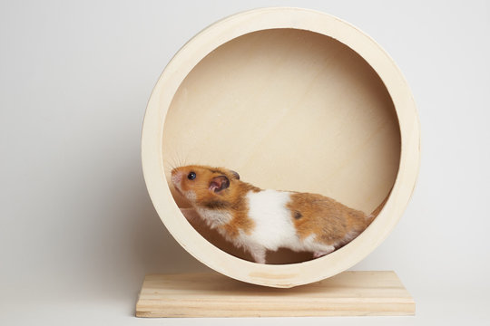
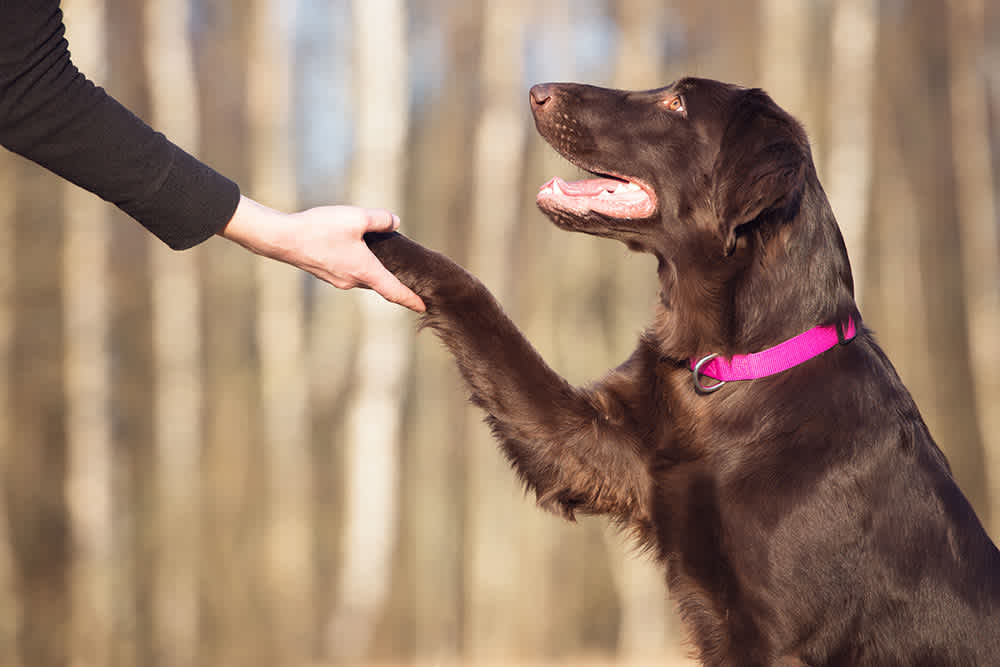
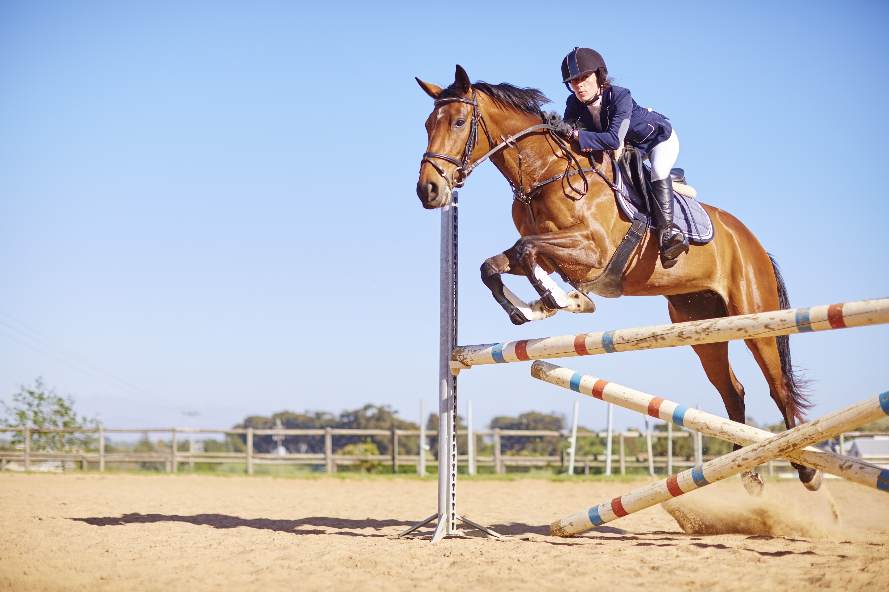
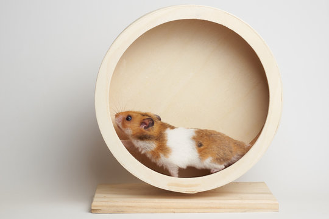
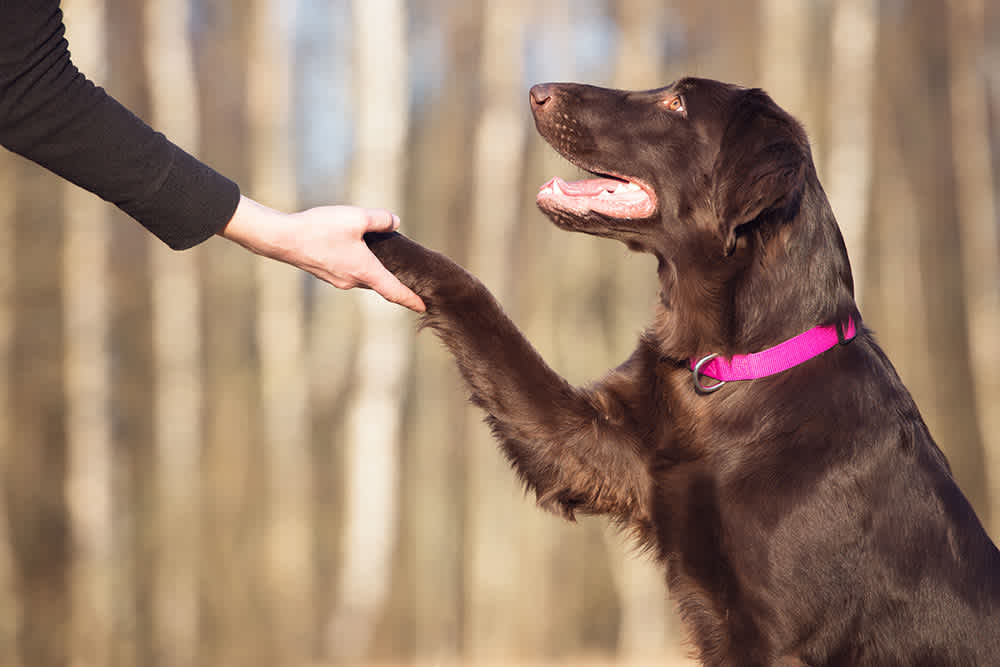
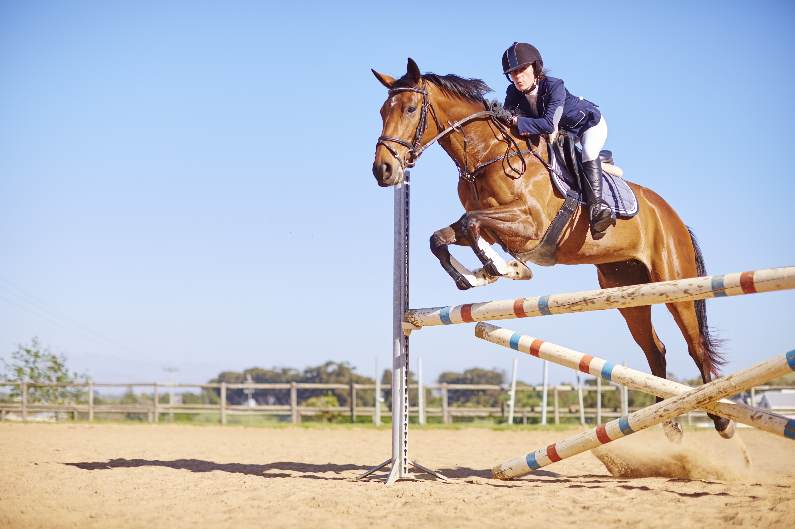

Vårens bästa träningstips
Våren är en perfekt tid att aktivera sig tillsammans med sitt djur, oavsett om du har en hund, häst eller ett annat aktivt husdjur. Långa promenader och löprundor i skogen är utmärkta för att stärka både din och ditt djurs kondition. Se till att anpassa träningen efter djurets ålder och fysiska förmåga – börja långsamt om det varit en lugn vinter. För hundar kan du prova agility eller lekar som apportering för att kombinera motion med mental stimulans. Hästägare kan fokusera på varierad träning med uteritter och markarbete. Glöm inte att ge pauser och vatten, särskilt när dagarna blir varmare. Våren är också en bra tid att kontrollera utrustning som koppel, selar och skor för att undvika skador. Med lite planering blir träningen både rolig och hälsosam för er båda! För att göra träningen ännu mer givande kan du sätta upp små mål, som att öka distansen ni går eller springer varje vecka, eller lära ditt djur nya tricks eller övningar. För sociala djur som hundar är våren också ett utmärkt tillfälle att träffa andra djurägare i parker eller på träningskurser, vilket ger både dig och ditt djur chans att bygga nya relationer. Kom ihåg att vara uppmärksam på tecken på trötthet eller obehag hos ditt djur – överträning kan leda till skador, särskilt om underlaget är hårt eller ojämnt. Avsluta gärna era träningspass med lugnare aktiviteter, som stretching för hästar eller en mysstund för hundar, för att stärka er relation och hjälpa musklerna att återhämta sig. Genom att göra träningen till en del av er vardag får ni både frisk luft, motion och en starkare vänskap!